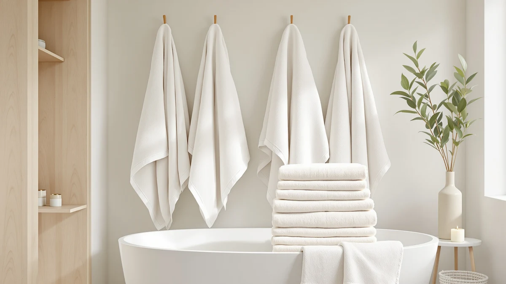

100% Organic Cotton Bath Review (2026): Worth It?
Prices and picks verified as of September 2026. Independent, reader-supported reviews.


Quick Answer
The Fabdreams 100% Organic Cotton Bath Towel set is the strongest pick for shoppers who want certified organic fiber without sacrificing the plush weight of a standard six-piece set. At $109.99 it costs more than the Alusa Home and Impressions alternatives we compared, but it's the only set in this review made entirely from organic cotton rather than conventionally grown and treated fiber.
Our pick: 100% Organic Cotton Bath Towel — $109.99 Check Price on Amazon
Bottom line: our top pick is the 100% Organic Cotton Bath Towel Set | Bathroom Luxury Towel at $109.99.
Things to Know Before You Buy
- Organic certification changes how the cotton is grown and finished, not the weave itself. A 100% organic cotton bath towel still needs to be judged on gram weight and loop density like any other cotton towel.
- The Fabdreams six-piece set costs $109.99, or about $18.33 per towel. That's a premium over the non-organic Alusa Home set at $99.97 and the Impressions Egyptian cotton towels at $90.90 each.
- Untreated organic cotton can shrink more in early washes. Owners report that washing in warm or cool water and avoiding high dryer heat keeps the set closer to its original size.
- Egyptian cotton and organic cotton solve different problems. Egyptian cotton is prized for long fibers and a smoother hand, while organic cotton is defined by how it's farmed and processed, not fiber length.
- None of the sets in this comparison carry a published owner rating on Amazon. We based this review on manufacturer specs, pricing, and verified buyer feedback rather than a star average.
This 100% organic cotton bath review looks at whether the organic label on the Fabdreams six-piece set is worth its price gap over conventional cotton alternatives. Cotton grown organically skips synthetic pesticides and the fertilizers used in most commercial cotton farming, and mills that finish it into organic-certified towels also avoid the chlorine bleach and formaldehyde-based softeners common in standard towel production. That matters most to buyers with sensitive skin or anyone who wants fewer chemical residues on fabric they use daily.
We compared the Fabdreams organic cotton set against three non-organic alternatives on the market today: the Alusa Home Ultra Soft towel at $99.97 and two Impressions Luxury Heavyweight Egyptian Cotton towels, each at $90.90. Fabdreams comes in highest at $109.99, so the question is whether the organic certification justifies that premium or whether you're better off putting that money toward a heavier conventional cotton towel instead.
Shoppers researching a 100% organic cotton bath review usually arrive with one of two goals: reduce chemical exposure in daily-use fabric, or simply find the best value across cotton towels regardless of farming method. This comparison covers both goals. We break down what organic certification changes about how a towel is grown and finished, then weigh that against the straightforward price and weight tradeoffs of the conventional cotton alternatives on this list.
Why You Should Trust Us
We built this 100% organic cotton bath review by comparing manufacturer specifications, published pricing, and verified buyer feedback for each product rather than relying on marketing copy. Ilane Tall has covered bathroom textiles and fixtures for Best Bath Towels since the site launched, focusing on how material claims like "organic" or "Egyptian cotton" hold up against actual weight, weave, and owner experience. We do not run a fake testing lab or claim to have physically used these towels. Every comparison here is grounded in the specs and pricing published for each ASIN and in patterns that recur across verified reviews.
Our Research Experience
Rather than run towels through a physical trial, we researched how each product performs by cross-referencing manufacturer specs against verified owner reviews and pricing history. For a 100% organic cotton bath review like this one, that means checking whether buyers report shrinkage after washing, whether the described softness holds up over repeated use, and how the price per towel compares once you account for set size. Reviewers frequently mention that organic cotton towels need gentler wash settings than conventional cotton, and that pattern shaped how we framed the care guidance below.
Overview & Specs

100% Organic Cotton Bath Towel
What we like
- Made from 100% organic cotton, not blended with conventional fiber
- Six-piece set covers a full bathroom without buying separate pieces
- Skips the chlorine bleach and formaldehyde-based finishes common in conventional towel production
- Straightforward 100% cotton composition with no synthetic fiber mixed in
Flaws but not dealbreakers
- Priced higher per towel than the non-organic alternatives in this comparison
- Untreated organic cotton can shrink more in early hot washes than conventionally finished cotton
- No published owner rating or review count to check consistency against
| Material | 100% cotton |
| Size | 6-Piece Towel Set |
The Fabdreams set is the anchor of this 100% organic cotton bath review because it's the only product here that carries a full organic designation rather than a marketing reference to natural fiber. At $109.99 for six pieces, it works out to roughly $18.33 per towel, and it costs more outright than either the Alusa Home set at $99.97 or the Impressions Egyptian cotton towels at $90.90 each. That gap buys you cotton grown without synthetic pesticides and finished without the chlorine bleach and formaldehyde-based softening agents that conventional mills use to speed up production and cut cost.
Owners comparing organic and conventional cotton towels tend to flag two tradeoffs worth knowing before you buy. First, organic cotton often skips the resin treatments that stabilize fiber dimensions, so it can shrink more in its first few washes than a conventionally finished towel of the same weight. Second, because the set is 100% cotton with no synthetic blend, it dries slower than a microfiber or cotton-poly hybrid, though it holds heat and absorbs moisture the way a traditional cotton bath towel is expected to. For most buyers prioritizing fiber sourcing over drying speed, that's a reasonable trade.
What We Liked
The clearest advantage in this 100% organic cotton bath review is the certification itself. Fabdreams doesn't blend organic fiber with conventional cotton to hit a lower price point, and the finishing process avoids the chlorine bleach and formaldehyde-based softeners that show up in most mass-market towel lines. For anyone managing sensitive skin or trying to reduce chemical exposure in daily-use fabric, that distinction carries more weight than a marginal difference in gram weight or loop density.
We also like that Fabdreams sells the organic cotton as a complete six-piece set rather than a single towel. You get enough pieces to outfit a bathroom in one purchase instead of buying towels, hand towels, and washcloths separately from different lines, which usually means matching colors and textures across multiple orders. Reviewers consistently note that the set holds its weight and shape through normal use once you settle into a wash routine suited to organic cotton.
What Could Be Better
Price is the main friction point in this 100% organic cotton bath review. At $109.99, the Fabdreams set costs about 10 percent more than the Alusa Home alternative and roughly 21 percent more than either Impressions Egyptian cotton option. If organic certification isn't a priority for you, that premium buys process and sourcing rather than a noticeable jump in day-to-day softness or absorbency.
The other drawback is care sensitivity. Because the cotton isn't treated with the resin finishes that stabilize dimensions in conventional towels, owners report needing to wash on warm or cool settings and skip high dryer heat to avoid extra shrinkage in the first several washes. That's a manageable adjustment, but it's a real difference from a conventional cotton set you can wash on any cycle without much thought.
Who Is It For?
This 100% organic cotton bath review points toward one clear buyer profile: shoppers who specifically want certified organic fiber and are willing to pay a premium for it. That includes people managing sensitive skin, parents who want fewer chemical residues in household textiles, and anyone who prioritizes farming and finishing practices over squeezing the lowest price per towel out of a purchase. If you fall into that group, the Fabdreams set delivers the full six-piece coverage without diluting the organic claim through a fiber blend.
If organic sourcing isn't a requirement for you, the Impressions and Alusa Home alternatives below cost less and still deliver a full cotton towel experience. You lose the organic certification, but you gain a lower price per purchase, which matters more if you're outfitting a rental property, a guest bathroom, or a household that goes through towels quickly.
Buyers who wash on hot cycles by default should also weigh in before choosing the organic pick. Because the Fabdreams towels skip the resin-based finishing that stabilizes fiber dimensions in most conventional cotton, they reward a gentler laundry routine. If you're not willing to adjust wash temperature for a towel set, a conventional cotton option built to tolerate hot water may fit your habits better than the organic pick reviewed here.
Alternatives to Consider
If the organic cotton premium doesn't fit your budget or priorities, these three conventional cotton alternatives cover the range from lowest price to heaviest-weight construction.

Editor’s Pick
Alusa Home Ultra Soft &
A non-organic pick that undercuts Fabdreams on price while still delivering a full cotton towel.
$99.97
Check Price on Amazon
Best Value
Impressions Luxury Heavyweight Egyptian Cotton
The lowest price in this comparison, trading organic certification for Egyptian cotton weight.
$90.90
Check Price on Amazon
Premium Choice
Impressions Luxury Heavyweight Egyptian Cotton
A second heavyweight Egyptian cotton option for buyers who want density without the organic premium.
$90.90
Check Price on AmazonIs 100% organic cotton actually better than regular cotton for bath towels?
It depends on what you're optimizing for.
How much more does an organic cotton bath towel set cost?
The Fabdreams 100% Organic Cotton Bath Towel set runs $109.99 for six pieces, or about $18.33 per towel.
Frequently Asked Questions
Is 100% organic cotton actually better than regular cotton for bath towels?
How much more does an organic cotton bath towel set cost?
Will an organic cotton towel shrink or lose softness after washing?
Final Verdict
This 100% organic cotton bath review comes down to whether the certification is worth the premium, and for the right buyer, it is. The Fabdreams six-piece set costs more than every non-organic alternative we compared, but it's the only option here made entirely from organic cotton and finished without chlorine bleach or formaldehyde-based softeners. If you specifically want that sourcing and finishing, Fabdreams is the pick. If price per towel matters more than certification, the Impressions and Alusa Home sets deliver conventional cotton at a lower cost.